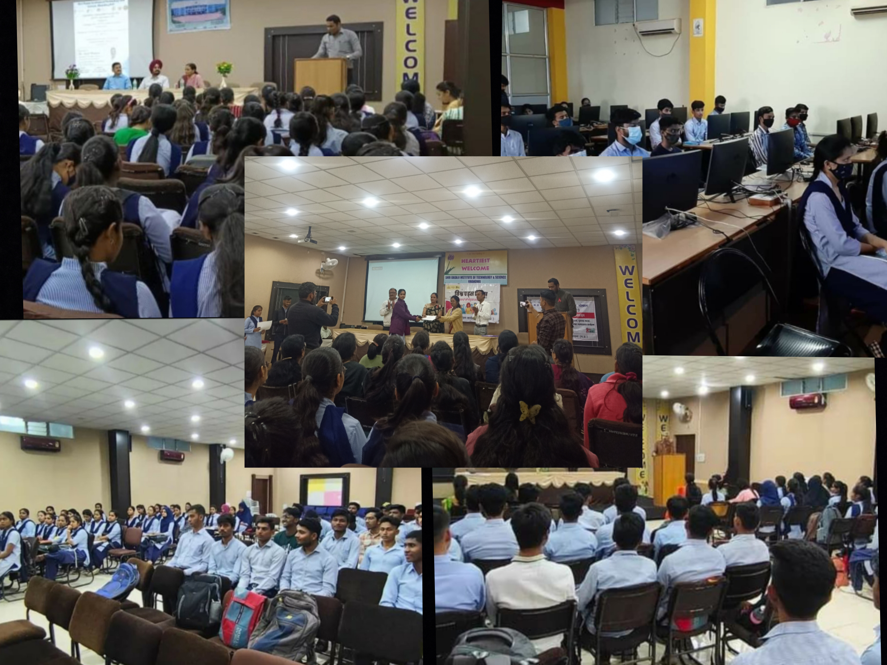

"अभ्युदय 2024"
Social/cultural activities not only help students to identify themselves
with the university, but also assist students to develop themselves in a desired field and also
improve skills such as organizational, presentation, leadership and interpersonal communication.
In the college various types of events are organized-cultural activities,sports,etc.some are shown below:
Dance competitions:
-solo dance
-duet dance
-group dance.
Ramp walk:
-Traditional
-western
-methodology.
Sports activies:
-volleyball.
-kho-kho
-cricket
-kabaddi
Dance competitions:
-solo dance
-duet dance
-group dance.
-solo dance
-duet dance
-group dance.
Ramp walk:
-Traditional
-western
-methodology.
-Traditional
-western
-methodology.
Sports activies:
-volleyball.
-kho-kho
-cricket
-kabaddi
-volleyball.
-kho-kho
-cricket
-kabaddi
"Internship & workshops"
- Intership program on ms office.
- Intership program on embedded systems.
- workshop on"life skills & placement skills.
- Workshop on web designing,HTML,CSS.
- Virtual intership program on android technology.
- Faculty developnment programme.
- Mastering employing skills.
- workshop on python & machine learning.
- Aptitube/quantitative aptitube training.
- vitual intership program on CNC system & programming.
- vitual intership program on PLC/SCADA technology.
